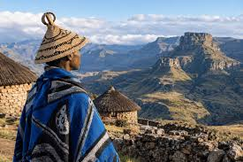

About Lesotho
Lesotho is a small, mountainous country in Southern Africa. It is completely surrounded by South Africa and is known for its beautiful landscapes and rich cultural heritage.
Our Culture
Basotho culture is an important part of the country's identity. Traditional clothing, music, food and community life help preserve the history and traditions of the Basotho people.
Nature and Landscape
Lesotho is famous for its high mountains, fresh air, scenic roads and beautiful natural attractions. These features make it an interesting place to visit.
